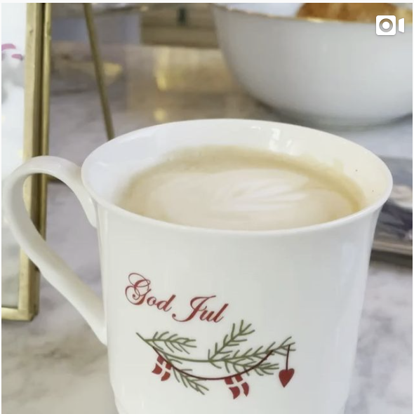
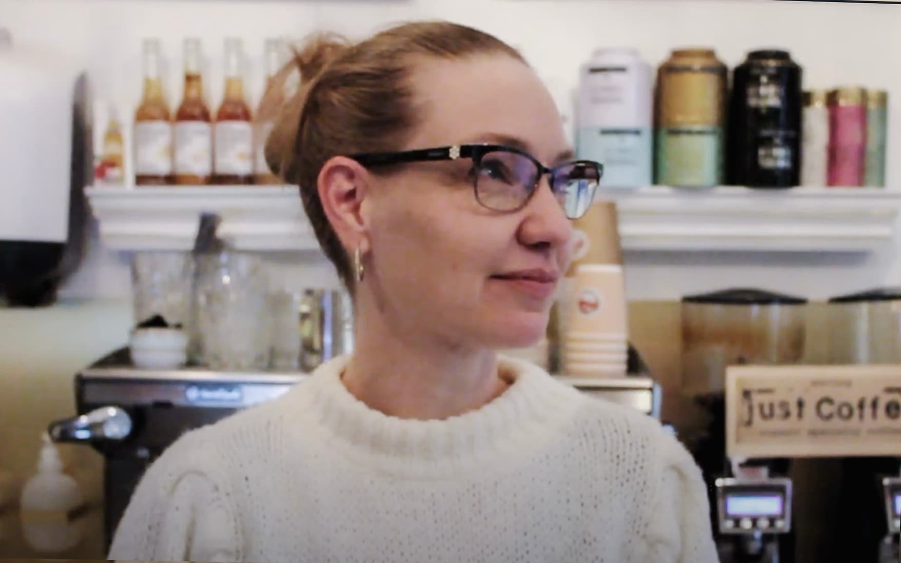

Om Aurelia Kaffe

Lidt om Aurelia Kaffe
Kaffe, guld og grønne skove! En eventyrlig kaffeoase i hjertet af Skt. Kjelds Kvarter på Østerbro. Her er velsmagende økologisk kaffe og andre lækkerier for små og store, yngre og ældre. Iskaffen, sodavanden eller théen kan tages med ud på Østerbro eller nydes i det hyggelige og rolige baglokale. Både børn og hunde er meget velkomne på Aurelia.

Katja
- ejer af Aurelia kaffebar
Cras eget ex nec sapien vulputate dictum ac sed nulla. Duis ex lacus, varius sed augue vitae, commodo congue elit. Aliquam mattis vehicula mauris, at maximus odio hendrerit ac. Cras eget ex nec sapien vulputate dictum ac sed nulla. Duis ex lacus, varius sed augue vitae, commodo congue elit.